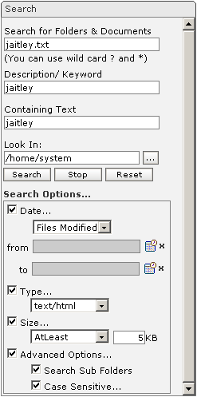

| 
|
- Search for Folders & Documents : Enter the name of the folder/document to be searched
- Description/Keyword: Enter the description/keyword of folder/document to be searched.
- Containing Text: Enter the containing text of the document to be searched.
- Look In: Enter the path where the search has to be performed
- Select the path where search has to be performed using look-up next to the Look In text.
- Search: Press 'Search' to perform the search based on the criteria entered.
- Stop: Press 'Stop' to stop the search.
- Reset: Press 'Reset' to reset entries to enable another search.
- Date: Check this option to search folder/document based on date entered in From or/and To Date.
You can select date using look-up next to the 'from/to Textbox'.
- Type: Check this option to specify the type of document to be searched like doc.
- Size: Check this option to search folder/document based on the size.
- Advanced Options: Check this option to search folder/ document using either "Search Sub Folders" or "Case Sensitive" search or both.
|